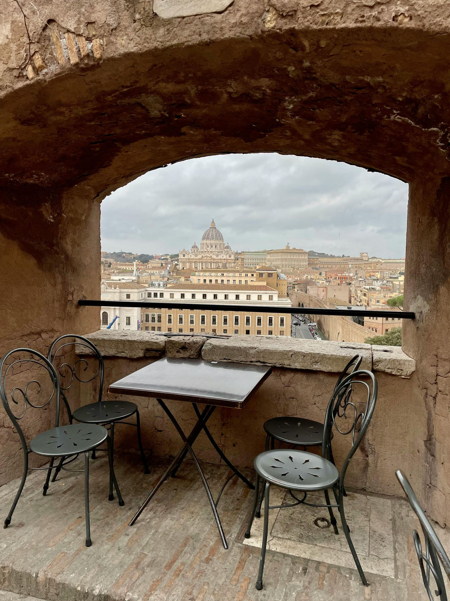

Il bar italiano è un simbolo culturale e sociale con una lunga storia e diversi usi.
Il bar italiano è un vero e proprio simbolo del nostro Paese, al pari della pizza e degli spaghetti. È un punto di ritrovo essenziale per gli italiani, frequentato a tutte le ore del giorno per gustare un caffè, un cappuccino o un aperitivo in compagnia di amici, parenti o conoscenti.

La cultura del bar è strettamente legata a quella del caffè, una delle bevande più amate in Italia. Esistono oltre trenta modi diversi di preparare il caffè, a testimonianza della sua importanza nella nostra tradizione. La storia del bar ha origini lontane, con le prime caffetterie nate a Costantinopoli nel 1554 e il primo bar aperto a Vienna nel 1684. In Italia, la prima bottega del caffè è stata inaugurata nel 1720 a Venezia.

I bar italiani sono diventati centri culturali e sociali, soprattutto nell'Ottocento, dove intellettuali e aristocratici si riunivano per discutere di letteratura, arte e politica. Nel tempo, con l'affermarsi della classe borghese, i bar si sono trasformati in luoghi di ritrovo aperti a tutti, inclusi uomini e donne di tutte le classi sociali.
Oggi, i bar italiani sono accessibili a tutti, con prezzi mediamente inferiori a quelli europei per caffè e cappuccini. Sono frequentati da milioni di italiani per colazione, spuntini o semplicemente per socializzare. Ogni bar ha la sua clientela fissa, diventando quasi una seconda casa per molti, soprattutto nei piccoli centri abitati.

Il bar rappresenta un punto di incontro e di scambio di idee, un luogo di aggregazione dove si può leggere un giornale, discutere di sport, politica o attualità, guardare le partite di calcio, giocare a carte o biliardo, o semplicemente incontrare gli "amici del bar". È un luogo che riflette la società italiana e i suoi cambiamenti, riuscendo a rimanere al passo con i tempi e a soddisfare le nuove esigenze dei suoi frequentatori.
fonte: Il bar in Italia, tra tradizione e modernità
Parole Chiave
| Amici | Persone che conosci e ti piacciono |
| Conoscenti | Persone che conosci ma non molto bene |
| Bevanda | Cosa che si beve (acqua, caffè, tè, ecc.) |
| Bicchiere | Contenitore per bere |
| Tazza | Contenitore per bere bevande calde |
| Locale | Posto pubblico dove le persone vanno |
| Cliente | Persona che compra qualcosa in un negozio o bar |
| Intellettuale | Persona che studia e pensa molto |
| Politica | Attività di governo o gestione di un paese |
| Artista | Persona che fa arte (pittura, musica, ecc.) |
| Discussione | Conversazione su un argomento |
| Salotto | Stanza della casa dove ci si rilassa |
| Storia | Racconto di cose che sono successe |
| Società | Gruppo di persone che vivono insieme |
| Prezzo | Quanto costa una cosa |
| Colazione | Primo pasto del giorno |
| Pausa | Breve tempo di riposo durante il lavoro o studio |
| Spuntino | Piccolo cibo che si mangia tra i pasti principali |
| Ritrovo | Incontro tra persone |
| Socializzazione | Atto di incontrare e parlare con altre persone |
| Servizio | Aiuto o lavoro fatto per qualcuno |
| Prodotti | Cose fatte per essere vendute o usate |
| Antico | Molto vecchio |
| Storico | Importante nella storia |
| Quotidiano | Ogni giorno |
| Bevanda calda | Cosa da bere che è calda (caffè, tè, ecc.) |
| Culturale | Relativo alla cultura (arte, musica, libri, ecc.) |
| Aristocratico | Persona di famiglia nobile |
| Tradizione | Costume o usanza che viene dal passato |
Esercizio
Domande
- Perché il bar è importante in Italia, come la pizza e gli spaghetti?
- Quali sono alcuni modi diversi di bere il caffè in Italia?
- Quando e dove è stato aperto il primo bar in Italia?
- Come è cambiato il ruolo del bar in Italia nel tempo?
- Perché i bar sono importanti nei piccoli paesi italiani?